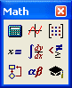

Math Toolbar |
|  | Toolbar |
|
|
Each button in the Math toolbar opens another toolbar of operators or symbols. To learn which toolbar each button brings up, hover the cursor over the button until a tooltip (small popup window) shows the button title, and a description of the button appears on the message line of the Status Bar.
Note that the individual tooltips on toolbar buttons are for US keyboards only. The Mathcad Keyboard Shortcuts page may show the shortcuts for your language keyboard.